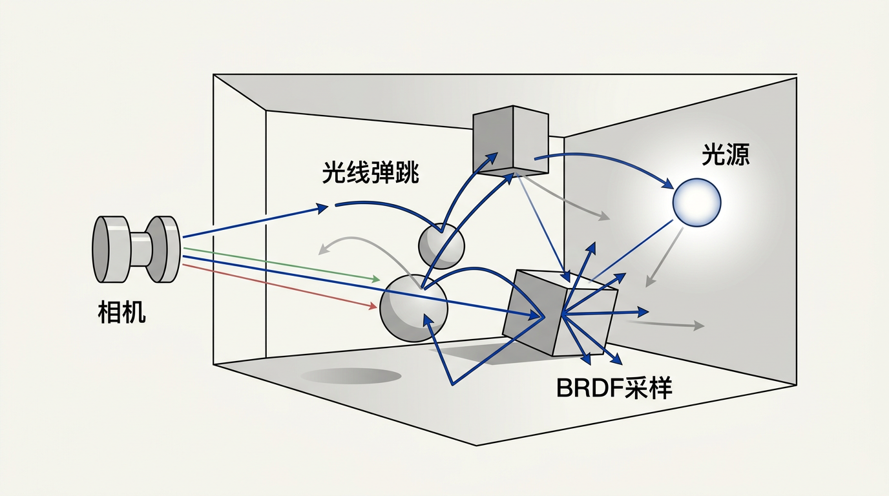

本讲义基于 Steve Marschner & Peter Shirley 所著《虎书》（Fundamentals of Computer Graphics）第5版第14章（p.374-400）基于物理的渲染。
PBR 完整数学体系——菲涅尔/斯涅尔定律、Schlick近似、BRDF 互易性与能量守恒、辐射度量学、输运方程、暴力光子追踪、路径追踪。
本版插画采用 Guizang 材质插画风格重新绘制。
虽然所有渲染在某种程度上都算是"基于物理的"，但基于物理的渲染（Physics-Based Rendering）在实践中意味着严格遵循物理模型，而非使用"现象学"（phenomenological）方法——后者通过启发式经验公式（例如在高光位置放一个"看起来对"的亮斑）来捕捉主观感知特征。本章将在较高层面覆盖基于物理的渲染，定义该领域所用的单位和术语，并给出一种暴力"路径追踪"算法，该算法可以非常慢地产生非常精确的图像。我们不会深入探讨市面上众多渲染算法的细节，但几乎所有这些算法都可以看作是对暴力算法的改进。值得注意的是，效率的改进正是我们在电影和游戏中获得逼真图形的原因——这种改进绝非无足轻重；我们之所以不覆盖这些细节，是因为它们是快速变化的前沿目标，且已有良好的生态覆盖——最著名的是Pharr等人（2016）的PBRT著作和代码库。

为了辅助直观理解，我们将用大量光子的集合来描述辐射度量学，本节首先确立在此语境中"光子"的含义。需要注意的是，在图形学中，"光子"并不一定意味着物理学家所指的严格定义——许多物理学家在读到图形学人写的"光子追踪"讨论时会感到困惑。对我们来说，光子通常只是一个能量包（energy packet），其行为遵循几何光学（光线沿直线传播，不展现波动特性）。
生活类比：把光子想象成雨滴。追踪单个雨滴在复杂地形中的弹跳路径，可以帮助你理解哪些区域会积水——这就像追踪光子来确定场景的照明分布一样。如果有一片倾斜的屋顶（类比光滑金属），雨滴会直接弹走；如果是一片草地（类比粗糙表面），雨滴会溅到各个方向。
更精确地说，对我们而言，光子是一束具有位置（position）、传播方向（direction of propagation）和波长λ（wavelength）的光包。有点奇怪的是，SI单位中波长使用纳米（nanometer, nm）作为单位——这主要是历史原因，1nm = 10⁻⁹m。另一个单位埃（angstrom）有时也被使用，1纳米=10埃。光子在介质中的速度c仅取决于介质的折射率n（refractive index）。有时也使用频率（frequency）f = c/λ 来描述光，这很方便——因为与λ和c不同，f在光子折射进入新折射率的介质时不会改变。
另一个不变量是光子携带的能量q，由以下关系给出：
q = hf = hc / λ (14.1)
其中 h = 6.63×10⁻³⁴ Js 是普朗克常数（Plank's Constant）。虽然这些量可以在任何单位系统中测量，我们尽可能使用SI单位。
想一想：如果光子进入水中（折射率n≈1.33），它的速度c会变小，波长λ也会变化，但频率f不变。这是为什么？这个事实对渲染计算有什么影响？
回到渲染的核心：BRDF（双向反射分布函数, Bidirectional Reflectance Distribution Function）描述了一个表面如何从每个入射方向反射光到每个出射方向。它是整个基于物理的渲染的理论基石。BRDF是一个4D函数 ρ(ki, ko)，其中ki是入射方向，ko是出射方向。在实际渲染中，BRDF被封装到所谓的材质（material）中，不同的材质类型对应不同的BRDF模型。
在图形学文献中，BRDF通常记作 fr(ωi, ωo)，其中ωi和ωo分别是入射和出射方向的单位向量（注意此处用ω替代了k，两者等价）。形式化地，BRDF是出射辐射亮度（reflected radiance）的微分与入射辐照度（incident irradiance）的微分之比：
fr(ωi, ωo) = dLo(ωo) / dEi(ωi) = dLo(ωo) / (Li(ωi) cosθi dωi)
这个定义揭示了一个关键点：BRDF的单位是 sr⁻¹（球面度⁻¹）。它描述的并非绝对反射量，而是"单位入射辐照度下产生的出射辐射亮度"——这是一个密度函数（density function）。
BRDF的4D本质：因为入射方向和出射方向各需2个角度参数（θ, φ），所以BRDF天然是一个4D函数。然而在实践中，大多数材质被假设为各向同性（isotropic），这意味着绕表面法线旋转不会改变反射行为——此时BRDF从4D降为3D，仅依赖于三个角度：入射俯角θi、出射俯角θo、以及两个方向之间的方位角差|φi − φo|。
光子视角和BRDF视角是对同一物理过程的两种等价描述：
这两种视角的对应关系是理解整个PBR框架的关键：BRDF中的概率密度对应于光子层级的散射概率分布。当我们从BRDF中采样一个出射方向时，本质上是在模拟"如果有一个光子从ωi方向射来，它最可能朝哪个方向反射"。
形式化提示：在后续章节中，我们会看到BRDF需要满足两个核心约束——互易性（Helmholtz reciprocity）和能量守恒——这两者都直接源于光子层级的时间反演对称性和能量守恒原理。任何违反这些约束的BRDF都会导致"物理上不可能"的渲染结果。
有了BRDF的定义，我们可以用一个积分方程来描述表面上某一点的辐射亮度——用来自所有方向的入射辐射亮度来表达。这正是计算机图形学中最重要的方程之一：输运方程（Transport Equation），也常被称为渲染方程（Rendering Equation）：
Ls(x, ko) = Le(x, ko) + ∫ ρ(ki, ko) Lf(x, ki) cosθi dσi
其中 Ls(x, ko) 是表面点x在方向ko上的出射辐射亮度（surface radiance），Le 是该点自身发射的辐射亮度，Lf 是从方向ki到达该点的场辐射亮度（field radiance），θi 是ki与表面法线的夹角，dσi 是入射方向的微分立体角。积分在所有入射方向上（通常仅上半球面）进行。
生活类比：输运方程就像一个追踪资金流动的会计等式——你的账户余额（出射光）= 初始存款（自发光）+ 所有转账收入减去手续费（BRDF×入射光×cos衰减）之和。每个"转账方"是一个入射光方向。
在图形学文献中，渲染方程通常用更标准的符号体系写出。使用 fr 表示BRDF，ω 替代 k，以及用上标表示"入射/出射"的方向约定，渲染方程的经典形式（Kajiya, 1986）为：
Lo(x, ωo) = Le(x, ωo) + ∫_{Ω⁺} fr(x, ωi, ωo) Li(x, ωi) |cosθi| dωi
各项的含义如下：
| 符号 | 含义 | 单位 |
|---|---|---|
Lo(x, ωo) | 位置x处方向ωo的出射辐射亮度 | W·m⁻²·sr⁻¹ |
Le(x, ωo) | 位置x在方向ωo的自发光辐射亮度 | W·m⁻²·sr⁻¹ |
fr(x, ωi, ωo) | 位置x处的BRDF | sr⁻¹ |
Li(x, ωi) | 从方向ωi入射到x的辐射亮度 | W·m⁻²·sr⁻¹ |
cosθi | 入射角余弦（投影面积因子） | 无量纲 |
Ω⁺ | 表面法线上方的上半球面 | — |
关于符号约定：在球坐标中，ωi的方向由其极角θi（与法线夹角）和方位角φi确定，微分立体角 dωi = sinθi dθi dφi。cosθi 因子（也称Lambert余弦项）表示了"到达表面的光通量密度随入射角增大而降低"这一几何事实——如同一束光越斜着照在表面上，单位面积上的光就越少。
并非所有4D函数都可以被称为物理上合法的BRDF。一个有效的BRDF必须满足两条基本约束，这两条约束直接源自物理定律：
fr(ωi → ωo) = fr(ωo → ωi)
互易性描述了光路可逆原理：交换入射和出射方向后，BRDF的值不变。这意味着"从A方向照光、从B方向观察"的亮度等于"从B方向照光、从A方向观察"的亮度。互易性源自电磁场的时间反演对称性——麦克斯韦方程组在时间反演下不变。
在渲染实践中，互易性的影响比直觉上更加深远：
∫_{Ω⁺} fr(ωi, ωo) · cosθo · dωo ≤ 1 (对所有 ωi 成立)
能量守恒约束的含义是：对于任意固定的入射方向ωi，在所有可能的出射方向ωo上对BRDF进行加权积分，所得的比例（即方向半球反射率）不能超过1。换句话说，表面反射的光能量不能超过入射的光能量。
不等式中的cosθo因子是"投影面积"修正——出射光分布到各个方向的"有效面积"不同。积分的结果在0到1之间：0表示完全吸收（理想黑体），1表示完全反射（理想白体/完美镜面）。
形式化验证：对朗伯表面 fr = ρ/π，能量守恒约束给出：
∫_{Ω⁺} (ρ/π) · cosθo · dωo = (ρ/π) · π = ρ ≤ 1
这意味着朗伯表面的反射率ρ必须在[0,1]范围内，且BRDF必须包含归一化因子1/π以确保∫cosθ·dω = π。
传统Phong模型违反能量守恒的根源在于：其镜面项缺乏适当的归一化——随着镜面指数n增大，BRDF的积分会显著超过1，导致渲染结果在多次弹跳后越来越亮（"能量爆炸"）。现代PBR模型通过显式归一化因子（如GGX分布函数的严格归一化）来保证能量守恒。
如果我们考虑空间中不同点之间的可见性，可以将积分域改写为对所有表面点的积分——这是在实际渲染器中最常用的形式。引入可见性函数（visibility function）v(x, x')之后：
Ls(x, ko) = ∫ ρ(ki, ko) Ls(x', x−x') v(x, x') cosθi cosθ' / ‖x−x'‖² dA'
其中可见性函数定义为：
v(x, x') = { 1, 若x与x'互相可见; 0, 否则 }
从立体角测度到面积测度的变换依赖于以下几何关系（参见图14.x）：从点x看去，点x'处的微分面积dA'对应的立体角为：
dωi = (dA' · cosθ') / ‖x − x'‖² (14.2a)
其中cosθ'是点x'处表面法线与方向x−x'之间夹角的余弦。分母‖x−x'‖²反映了平方反比定律——远处的表面对应更小的立体角。将这个变换代入立体角形式的渲染方程即得面积形式。这种变换在实现中至关重要——它允许我们在光源表面上采样（面积测度），而不是在方向球面上采样（立体角测度），这对直接光照的高效计算至关重要。
渲染方程的递归性质——出射辐射亮度依赖于其他点的辐射亮度，而其他点的辐射亮度又依赖于更多点的辐射亮度——意味着不可能用封闭形式求解，必须使用蒙特卡洛等数值方法近似计算。
将渲染方程中的Ls递归地代入自身，我们得到一个无穷级数——即所谓的Neumann级数（Neumann series）或路径积分形式（path integral formulation）：
Lo = Le + T·Le + T²·Le + T³·Le + …
其中 T 是传输算子（transport operator），定义为：
(T·F)(x, ωo) = ∫_{Ω⁺} fr(x, ωi, ωo) · F(x, ωi) · cosθi · dωi
Neumann级数中的每一项对应一种特定弹跳次数的光路贡献：
| 项 | 物理含义 | 在渲染中的名称 |
|---|---|---|
Le | 零次弹跳：直接从光源发出的光到达相机 | 直接可见光源 |
T·Le | 一次弹跳：光从光源发射→击中表面→反射到相机 | 直接光照（Direct Illumination） |
T²·Le | 两次弹跳：光经过两次表面反射后到达相机 | 一次间接光照 |
T³·Le及更高 | 三次及以上弹跳 | 多次间接光照（Indirect Illumination） |
展开后，路径积分形式可以写为对所有可能光路长度的多重积分求和：
Lo(x, ωo) = Σ_{k=0}^{∞} ∫ … ∫ Le(xk) · {∏_{i=0}^{k-1} fr(xi) · G(xi↔xi+1)} · dA1 … dAk
其中 G(x↔x') = v(x, x') · cosθ·cosθ' / ‖x−x'‖² 是几何耦合项（geometry term），它将两个表面点之间的辐射亮度传输统一描述。G项同时编码了三件事：两点是否相互可见（v）、斜射投影修正（cosθ和cosθ'）、以及距离平方衰减（1/‖x−x'‖²）。
洞察：Neumann级数揭示了渲染本质上是一个无穷维积分问题。路径追踪的递归版（14.10节）实际上就是对这个无穷级数进行随机截断的蒙特卡洛估计。每一项TkLe对应k次弹跳的光贡献，而路径长度决定了弹跳次数——这是为什么俄罗斯轮盘赌（14.10.2节）能够无偏地截断无穷级数。
渲染方程本身是开放的——它没有说明场景中光的初始来源。在实际求解中，我们施加边界条件：某些表面被指定为"光源"，其上 Le > 0。对于不发光表面，Le = 0，方程退化为纯散射。环境光（如天空）通常被建模为包围场景的"远距离发光半球"，作为边界条件的一部分。
想一想：为什么输运方程中的积分只在"上半球面"进行？如果光线从表面下方射来——比如透过玻璃的光——这个简化还成立吗？
对于光滑金属，光要么发生镜面反射（如第4.5.4节所述），要么折射进入表面后迅速被吸收（涂在玻璃上的极薄金属涂层允许一些光穿透，表明金属并非完全不透明）。反射光的数量由菲涅尔方程（Fresnel equations）决定。这些方程虽直截了当但计算繁琐。此外，它们的值随光的偏振而变化——这一特性在图形学中通常被忽略。菲涅尔方程的主要视觉效果是：反射率随入射角增大而增大，尤其是在掠射角（grazing angles）附近趋近于100%。
生活类比：站在湖边低头看脚下——你可以穿透过水面看到湖底（近垂直入射，反射率低）。但如果眺望远处的湖面，你看到的全是天空的倒影（掠射角入射，反射率接近100%）。这就是菲涅尔效应的日常体现。另一个例子是透过水族箱玻璃——正对着看非常透明，斜着看则像镜子一样反射。
在深入讨论Schlick近似之前，必须了解完整的菲涅尔方程形式。菲涅尔方程给出了反射率随入射角、偏振态和两种介质折射率的变化关系。光分为两种偏振态：
两种偏振态的菲涅尔反射系数分别为：
完整的菲涅尔方程（以入射角θi和透射角θt表示）：
Fs(θi, θt) = | (ni cosθi − nt cosθt) / (ni cosθi + nt cosθt) |² Fp(θi, θt) = | (nt cosθi − ni cosθt) / (nt cosθi + ni cosθt) |²
其中θt由斯涅尔定律确定：ni sinθi = nt sinθt。
对非偏振光（自然光——这是大多数日常光源的特性），总反射率取两种偏振的平均值：
F(θi) = (Fs(θi) + Fp(θi)) / 2
Fs和Fp的行为有明显的差异：
对金属而言，折射率不是实数而是复数：ñ(λ) = n(λ) + iκ(λ)。其中实部n控制折射角度，虚部κ（extinction coefficient，消光系数）控制介质内部的光吸收。对于金属，κ很大——这就是为什么光在进入金属后迅速被吸收。由于ñ为复数，菲涅尔方程的形式变得更为复杂，但Schlick近似同样适用：只需将法向反射率R₀指定为：
R₀(λ) = ((n(λ)−1)² + κ(λ)²) / ((n(λ)+1)² + κ(λ)²)
典型金属的R₀值非常高（金约0.8–0.9，银约0.95+），这解释了金属的高反射性。
几乎所有图形程序都使用Schlick近似（Schlick, 1994）来替代完整的菲涅尔方程。对于金属，我们通常指定法向入射反射率（reflectance at normal incidence）R₀(λ)。反射率应根据菲涅尔方程变化，Schlick提供了一个很好的近似：
R(θ, λ) = R₀(λ) + (1 − R₀(λ))(1 − cosθ)⁵ (14.2)
其中θ是光传播方向与表面法线之间的夹角。这个近似允许我们简单地通过数据或肉眼来设定金属的法向反射率。
为什么是五次幂？ Schlick近似的动机并非纯粹的曲线拟合：(1−cosθ)⁵ 这一形式恰好捕捉了菲涅尔曲线在接近掠射角时陡峭上升的形状。五次幂在θ=0（法向）时给出(1−1)⁵=0，使得R(0)=R₀；在θ=90°（掠射角）时给出(1−0)⁵=1，使得R(90°)=R₀+(1−R₀)=1——反射率达到100%。过渡区间的五次曲线恰好与完整菲涅尔方程几乎重合，误差通常小于1%，在视觉上完全不可察觉。
Schlick近似的另一个关键优点：它完全避免了折射角θt的计算（θt需要通过斯涅尔定律反三角函数求解），这对金属和电介质都适用，极大简化了着色器代码。
电介质（dielectrics）是折射光的透明材料，一个不错的启发式是：如果不是金属，那就是电介质。因此皮肤、牛奶、头发、布料以及几乎所有日常材料都是电介质——尽管这并不明显，因为它们通常不透明——原因是它们由不同折射率的混合物和吸光杂质组成。但光滑均匀的电介质是透明的，例子包括玻璃、水和眼球晶状体。
对于光滑电介质，只有三个重要性质：
光的几何弯曲方式及反射/透射的比例取决于材料的折射率（refractive index）n(λ)。对电介质，同样的Schlick方程（式14.2）适用于反射率的计算，就像对金属那样。然而，当一侧介质为空气（n≈1）时，我们可以用n(λ)来表示R₀(λ)：
R₀(λ) = ((n(λ) − 1) / (n(λ) + 1))²
更一般地，当两个介质的折射率都不为1.0时：
R₀(λ) = ((nt(λ) − ni(λ)) / (nt(λ) + ni(λ)))²
通常情况下n不随波长变化，但对于色散（dispersion——不同波长的光分散开，产生彩虹效果）很重要的应用场景，n可以变化。有用的折射率参考值包括：水（n=1.33）、玻璃（n=1.4到n=1.7）、钻石（n=2.4）。透射光的数量就是未反射的部分（能量守恒的结果），因此不需要显式计算透射比例。
光在介质界面的折射方向由斯涅尔定律（Snell's Law）决定：折射角φ满足 ni sinθ = nt sinφ。当光从较高折射率介质射向较低折射率介质时，如果入射角超过临界角（critical angle），就会出现全内反射（total internal reflection）——光线完全反射回原介质，没有折射光线。此时折射方向公式中的平方根内为负数。全内反射是造成玻璃物体丰富外观的重要原因。
全内反射的临界角可以通过斯涅尔定律在 sinφ = 1（即φ = 90°，折射光线贴界面传播）的条件下解出：
θc = arcsin(nt / ni) （需要 ni > nt）
例如，光从水（ni=1.33）射入空气（nt=1.0），临界角 θc = arcsin(1.0/1.33) ≈ 48.6°。如果在水下以大于48.6°的角度向上看，水面看起来就像一面完美的镜子——这正是Snell's Window现象（水下观察者看到的水面圆形"天窗"）的原因。
| 材料对 | ni | nt | 临界角 θc |
|---|---|---|---|
| 水→空气 | 1.33 | 1.00 | ≈48.6° |
| 玻璃(n=1.5)→空气 | 1.50 | 1.00 | ≈41.8° |
| 钻石(n=2.4)→空气 | 2.40 | 1.00 | ≈24.6° |
| 空气→水 | 1.00 | 1.33 | 无全内反射（ni < nt） |
折射方向的向量公式为：
t = (n(d − n(d·n))) / nt − n cosφ = (n(d − n(d·n))) / nt − n √(1 − n²(1−(d·n)²)/nt²)
其中d是入射方向向量，n是法向量。该公式无论ni和nt哪个更大都适用。当全内反射发生时（即平方根内为负数），折射光线不存在——渲染代码中需用特殊分支处理这种情况。
对于含有均匀杂质的材质（如典型的彩色玻璃），携带光的射线的强度将按比尔定律（Beer's Law）衰减。光在介质中传播时，强度的衰减满足 dI = −C I dx，即 dI/dx = −C I。解此微分方程得到指数衰减：I = k exp(−Cx)。衰减程度由RGB衰减常数（attenuation constant）a描述——即经过单位距离后的衰减量。代入边界条件 I(0) = I₀ 和 I(1) = a I₀，得到：
I(s) = I₀ · as
或等价地：
I(s) = I₀ · eln(a)·s
其中 I(s) 是距离界面s处的光束强度。实际上我们通过肉眼来反推a的值，因为这类数据很难直接查到。比尔定律的效果可以在图14.3中看到——玻璃呈现绿色色调。这个效应对透射光同样适用。注意光线会被反复反射和折射（图14.5），通常只有一到两个反射像清晰可见。
想一想：如果你有一块2cm厚的绿色玻璃，它的衰减常数a=0.8/cm。经过2cm后光强还剩多少？如果玻璃厚度翻倍，衰减是否也翻倍？为什么是指数衰减而不是线性衰减？
对于完美光滑的表面（如理想的镜子），反射行为是确定性的：每个入射方向只对应一个出射方向。在BRDF的数学框架中，这对应一个狄拉克δ函数（Dirac delta function）——BRDF在"正确"的反射方向上取无穷大值，在其他方向上为零。
生活类比：想象你在打台球。当你将白球直直地击向桌边时，它会以相同的角度弹回——这是镜面反射。但如果桌边凹凸不平（类比粗糙表面），白球会朝各种不可预测的方向反弹——这就是漫反射。镜子就是完美的"台球桌边"。
数学上，对于理想镜面反射，BRDF可以写为：
ρ(ki, ko) = (R(θi) / cosθi) · δ(ko − r(ki))
其中 r(ki) 是入射方向ki关于表面法线的镜面反射方向，R(θi) 是菲涅尔反射率，δ函数确保只有反射方向有贡献。从能量守恒和互易性的角度看，镜面反射是所有可能BRDF中"最集中"的一种——所有出射能量集中在一个无限窄的锥体中。
δ函数BRDF的完整形式涉及两个角度（θ和φ），δ(ko − r(ki))实际上是两个δ函数的乘积：δ(cosθo − cosθi) · δ(φo − φi − π)。归一化因子1/cosθi来自立体角坐标变换的Jacobian——它确保当将此BRDF代入渲染方程时，积分正确地简化为Lo = R(θi) · Li(r(ki))。
将镜面BRDF代入渲染方程的散射项：
Ls(ωo) = ∫_{Ω⁺} (R(θi)/cosθi) · δ(ωo − r(ωi)) · Li(ωi) · cosθi · dωi
= R(θr) · Li(r−1(ωo))
其中r−1(ωo)是满足ωo=r(ωi)的入射方向（即镜面反射的逆方向——由于反射的对称性，这恰好也是r(ωo)）。cosθi因子被分母中的1/cosθi完美抵消，积分退化为简单的取值——这正是δ函数的筛选性质。
在实际渲染代码中，处理镜面反射通常不使用BRDF采样，而是直接用一条"if"分支——如第4章所述，生成反射光线：
r = d − 2(d·n)n
其中d是入射方向，n是表面法线。这种方法避免了在数值精度有限的浮点运算中处理δ函数的困难。
想一想：δ函数BRDF在积分时会给出有限值，但在采样时会遇到困难。为什么不能用蒙特卡洛均匀采样来处理镜面反射？如果随机抽样方向，命中"正确"反射方向的概率是多少？
当表面既有镜面分量又有漫反射分量时，BRDF是两个部分的加权组合。这就是混合BRDF模型（hybrid BRDF model）的基本思想——例如Phong模型和后续的Cook-Torrance模型，后者用微面元理论（microfacet theory）将镜面和漫反射分量统一在一个物理一致的框架中。
一般的混合BRDF形式为：
fr(ωi, ωo) = kd · fdiffuse + ks · fspecular(ωi, ωo)
其中 kd + ks ≤ 1 满足能量守恒要求。在微面元模型中，镜面分量进一步分解为：
fspecular(ωi, ωo) = D(h) · F(ωi, h) · G(ωi, ωo, h) / (4 |ωi·n| |ωo·n|)
其中D（法线分布函数）描述微面元法线的分布，F（菲涅尔项）描述反射率随角度变化，G（几何遮蔽项）描述微面元之间的遮挡，h是半程向量（half-vector）h = (ωi+ωo)/|ωi+ωo|。这三个项的乘积在分母中有4|ωi·n||ωo·n|的归一化因子——这是从微面元几何变换中自然导出的，确保镜面BRDF在能量上是守恒的。
假设我们用带有微结构的电介质和一个发光物体来建模场景，最简单的渲染方法是什么？本节讨论如何通过暴力模拟光子来渲染，以及如何反过来从传感器发送伴随光子（adjoint photons）。这种方法实际上可以产生图形学中最好的图像，代码量极少——但速度极慢。
为了产生图像，我们需要一个图像捕获设备的概念。一个简单的设备是传感器阵列（如CCD）加上一个带有小孔的盒子——它就像一台针孔相机（pinhole camera）。阵列中的每个传感器本质上是一个光子计数器（某些波长比其他波长产生更强的响应）。用光子轰击后，传感器阵列上将积累数值，可以输出为图像：接收到少量光子的传感器记为黑色，接收到大量光子的记为白色，中间为各种灰度。
要产生彩色图像，我们可以在传感器前放置红、绿、蓝三色滤光片。最简单的滤光片是带通滤光片（bandpass filter）：蓝色滤光片仅对λ∈[400,500nm]有响应；绿色对[500,600nm]；红色对[600,700nm]。如果将所有传感器初始化为零，那么"完全响应"就意味着当光子击中时增加传感器中存储的数值。
追踪光子的过程：在光源上随机选取一个点，随机选取一个方向和一个波长（在400-700nm之间，其他波长不影响传感器阵列所以不需要计算）。然后按第4章的方法追踪射线。当射线击中表面时，计算反射率并决定是反射还是折射。用Schlick近似评估该波长和入射角的反射率，记为R。生成均匀随机数ξ ∈ [0,1)：
if (ξ < R)
生成反射光子（射线）并追踪它
else
生成折射光子（射线）并追踪它
如果表面是金属，唯一的区别是在折射情况下光子被吸收，我们从光源处开始新光子。如果光子进入电介质且比尔定律系数不为1（意味着材料吸收光，如绿色玻璃），光子可能会以概率方式被吸收（从而"死亡"）：
if (ξ < 吸收概率)
吸收并开始新光子
else
允许该光子在下次命中时离开介质
以上就是生成出色图像所需的全部过程！只是非常慢。
暴力光子追踪的低效性源于一个简单的几何事实：从光源随机发射的光子中，绝大多数永远不会命中相机的透镜。以一个典型的室内场景为例：
因此，正向光子追踪中"有用的"光子（最终击中传感器）占总发射光子的比例极低——通常低于10⁻⁶。这就是时间反转策略（14.5.4节）如此重要的原因：它通过从相机发射"伴随光子"，将命中概率从10⁻⁶提升到接近100%。
上述针孔相机会产生非常锐利的图像——就像真实的针孔相机一样。但它需要长时间曝光，因为极少有光子能幸运地穿过针孔而不被吸收。我们可以通过添加镜头来解决：把针孔放大并放置镜头。可以采用真实复合玻璃镜头模型，也可以采用理想薄透镜（ideal thin lens）。
薄透镜是一个理想化透镜——无限薄（在光线追踪程序中表现为一个圆盘），仅由半径（透镜物理尺寸）和焦距（focal length）f 指定。薄透镜实现只需满足三个性质：
1/a + 1/b = 1/f拥有真实或理想透镜会自动产生真实照片中的模糊效果——通常称为离焦模糊（defocus blur）或景深（depth of field）。
对于运动模糊（motion blur），如果支持两个功能，该效果会自动出现：
一个简单的移动物体示例是球心随时间沿直线移动的球体：c(time) = g + time·(h − g)。
上述光子追踪器能够工作且效果良好，但会非常慢——因为即使加装透镜后，大部分光子永远也不会击中透镜（如果以太阳为光源进行模拟，任何光子能到达相机都算走运）。
生活类比：正向光子追踪就像从山顶向四面八方随机扔出无数个小球，希望其中几个能滚进山脚小镇的一户特定人家。时间反转（伴随光子）则更像从那户人家出发往回找——你沿着下坡路一定能回到山顶。后者效率高出天文数字倍。
图形学中通常的做法是反转时间，从相机发出一条射线，在射线击中光源时记录。在我们设计的光子追踪器中，这实现起来非常简单：从每个像素发出光子（技术上称为伴随光子，adjoint photons），看它们击中何处光源。这些光子的波长由滤色片作为光发射曲线确定，当击中光源时，我们以发射光的权重在像素传感器阵列上记录光子。
时间反转发策略之所以在数学上等价于正向追踪，源于光在几何光学中的Helmholtz互易性原理（与BRDF互易性同根同源）：在稳态光场中，任何一条从光源到传感器的光路，其反向（从传感器到光源）具有完全相同的辐射度量学传输特性。形式上，如果正向追踪中一条光路贡献了L的辐射亮度到传感器，那么反向追踪同一条光路也会记录恰好L的辐射亮度——唯一需要调整的是功率的归一化因子（因为反向追踪中相机的"接收面积"和光源的"发射面积"对调）。
想一想：为什么"时间反转"策略与正向光子追踪在数学上是等价的？这背后的物理原理是光路可逆性。如果我们将正向追踪中每条命中相机的光子路径反向，会得到什么？
在代码层面，时间反转的实现极其简洁——几乎和正向追踪是同一段代码，只需修改初始条件：
// 正向光子追踪（效率极低）
for each photon from light source:
trace photon through scene
if photon hits sensor: record
// 伴随光子追踪（路径追踪的基础）
for each pixel:
generate ray from camera through pixel
trace ray through scene
if ray hits light source: record radiance
事实上，这个"伴随光子追踪"就是路径追踪（14.10节）的简化雏形——差异仅在于伴随追踪中每个交点只采样一个方向（非BRDF重要性采样），而路径追踪会使用更智能的采样策略。
在实践中，上一节的暴力渲染器在应用中并不可行。所以我们不再对微几何（microgeometry）建模，而是对宏观行为（bulk behavior）建模。这需要使用测量光的实用工具——统称为辐射度量学（radiometry）。辐射度量学中出现的术语乍看可能奇怪，术语和符号也不容易记住。本节最重要的量是辐射亮度（radiance），但大多数图形学人一旦学会了辐射亮度的定义，就会将其映射为亮度/颜色/强度的直观概念——在实践中99%的情况都是对的。但有时需要精确定义，我们在此提供。光本质上是能量的传播形式，因此SI能量单位——焦耳（joule, J）——是有用的起点。
在深入各个量的详细定义之前，理解它们之间的层级关系至关重要。辐射度量学量可以按"积累的维度数"组织成一个级联体系：
| 量 | 符号 | 定义 | 单位 | 光谱对应量 |
|---|---|---|---|---|
| 辐射能量（Radiant Energy） | Q | 光的总能量 | J（焦耳） | Qλ [J·nm⁻¹] |
| 辐射通量/功率（Radiant Flux） | Φ | dQ/dt | W = J·s⁻¹ | Φλ [W·nm⁻¹] |
| 辐照度/辐射出射度 | E / M | dΦ/dA | W·m⁻² | Eλ [W·m⁻²·nm⁻¹] |
| 辐射强度（Radiant Intensity） | I | dΦ/dω | W·sr⁻¹ | Iλ [W·sr⁻¹·nm⁻¹] |
| 辐射亮度（Radiance） | L | d²Φ/(dA⊥ dω) | W·m⁻²·sr⁻¹ | Lλ [W·m⁻²·sr⁻¹·nm⁻¹] |
这个表格揭示了辐射度量学的核心结构：每个量都是前一个量对某个几何维度的密度导数。辐射通量Φ是能量在时间上的密度；辐照度E是Φ在面积上的密度；辐射强度I是Φ在立体角上的密度；辐射亮度L是Φ同时在面积和立体角上的密度——这是唯一一个"双密度"量，也是它的特殊地位之所在。
如果有一大群光子，其总能量Q可以通过求和每个光子的能量qi来计算。一个合理的问题是："能量如何随波长分布？"简单的方法是将光子分桶——本质上就是直方图。例如，将所有波长在λ=500nm到600nm之间的光子能量加起来，得到10.2J，记为 q[500,600] = 10.2。更常用的做法是将能量除以区间大小，得到光谱能量（spectral energy）：
Qλ[500,600] = 10.2 / 100 = 0.12 J(nm)⁻¹
这种方法的优点是区间大小对数值量级的影响更小。一个直觉是将区间大小Δλ推到零——但这样做会很奇怪，因为对于足够小的Δλ，Qλ要么是零（区间内没有光子）要么是巨大值（区间内有一个光子）。对此有两种思想流派：一种是假设Δλ虽然很小，但还没小到让光的量子性质显现的程度；另一种是假设光是连续体而非单个光子，因此真正的导数dQ/dλ是合适的。两种思考方式都是正确的，导向相同的计算机制。
光谱能量是一个强度量（intensive quantity），与能量、长度或质量等广延量（extensive quantity）相对。强度量可视为密度函数——告诉我们一个广延量在无穷小点处的密度。例如，特定波长的能量Q可能为零，但光谱能量Qλ是一个有意义的量。图形学中的惯例是几乎总是使用光谱能量，而很少使用能量本身。为方便起见，我们去掉下标，用Q表示光谱能量。
关于光谱能量的直觉可能得益于想象一个带有传感器的测量设备。如果你在传感器前放置一个只允许波长在 [λ−Δλ/2, λ+Δλ/2] 内光通过的滤光片，那么在λ处的光谱能量就是 Q = Δq/Δλ。
估计光源产生能量的速率是有用的。这个速率称为功率（power），或辐射通量（radiant flux），以瓦特（Watt, W）为单位——即焦耳每秒。功率是一个强度量（时间上的密度），即使能量产生随时间变化，它的定义也是明确的。例如一个100瓦灯泡，每秒消耗约100J能量。由于热量损失等因素，实际光能的功率会低于100W。
完整定义：
Φ = dQ / dt [单位：瓦特 W = J·s⁻¹]
辐射通量Φ描述了"光能以多快的速率流动"。它是渲染管线的"货币"——所有辐射度量学量最终都可以通过Φ来表达。
一个有趣的推导：一个100W灯泡每秒产生多少光子？假设产生的平均光子波长λ=500nm。该光子的频率为：
f = c / λ = 3×10⁸ ms⁻¹ / (500×10⁻⁹ m) = 6×10¹⁴ s⁻¹
该光子的能量 hf ≈ 4×10⁻¹⁹ J。这意味着即使灯泡效率不高，每秒也会产生惊人的10²⁰个光子——这解释了为什么用直接模拟光子的方法来产生图像是一个低效的选择。
与能量类似，我们真正关心的是光谱功率（spectral power），单位为 W(nm)⁻¹。正式符号是Φλ，但我们用不带下标的Φ以方便并与图形学文献一致。注意，光源的光谱功率通常比总功率小很多。例如，如果一个光源以100W总功率均匀分布在400–800nm波长范围内，那么光谱功率将是 100W / 400nm = 0.25 W(nm)⁻¹。
辐照度（Irradiance）——如果你问"多少光到达这个点？"时自然出现的量。当然答案是"零"，所以我们必须使用密度函数。如果点在表面上，用面积来定义密度函数是自然的。如果我们修改上一节的测量设备，使其具有有限面积ΔA的传感器，则光谱辐照度H就是单位面积上的功率：
H = Δq / (ΔA · Δt · Δλ) (14.3)
完整定义：
E = dΦ / dA [单位：W·m⁻²]
因此，辐照度的完整单位是 J·m⁻²·s⁻¹·(nm)⁻¹。注意辐照度的SI单位中同时使用了逆平方米（面积）和逆纳米（波长）——这种看似的不一致性源于面积和可见光波长的自然单位。
需要区分两个密切相关但方向相反的量：
两者单位相同（W·m⁻²），但物理含义不同。对不发光的反射表面，辐射出射度由入射辐照度和BRDF共同决定：
M(x) = ∫_{Ω⁺} ∫_{Ω⁺} fr(x, ωi, ωo) Li(x, ωi) cosθi cosθo dωi dωo
即对入射球形方向积分得到辐照度，再通过BRDF分布到各个出射方向。
如果你问"一个点光源在不同方向上的亮度分布是什么？"，自然会引出辐射强度（Radiant Intensity）I——它是光源在某个方向上单位立体角内的功率。虽然这个概念在图形学中常被避免直接使用（因为点光源会导致实现问题），但理解它对构建完整辐射度量学体系是必要的。辐射强度I与功率的关系为 dΦ = I dσ。
完整定义：
I = dΦ / dω [单位：W·sr⁻¹]
辐射强度I描述了光源的"方向性发射特性"——一个各向同性点光源在所有方向上I相同（I = Φ/4π），而聚光灯在某些方向上I更大。辐射强度在点光源建模中有用，但在面光源和全局光照中很少使用——因为大多数真实光源不是点而是面，而辐射亮度L是更通用的描述量。
辐射亮度（Radiance）L是辐射度量学中最重要的量。它描述的是"从某个方向到达（或离开）表面上某一点的光有多少"。形式上，辐射亮度定义为：
L = d²Φ / (dA⊥ dσ)
其中 dA⊥ = dA · cosθ 是投影面积（projected area），dσ是立体角。
完整定义展开：
L(x, ω) = d²Φ / (dA·cosθ · dω) [单位：W·m⁻²·sr⁻¹]
辐射亮度的关键特性是在真空中沿射线传播时保持不变——这使它成为光线追踪中理想的传输量。
辐射亮度的层次化理解：
| 层面 | 理解 |
|---|---|
| 数学定义 | 单位投影面积、单位立体角内的功率 —— d²Φ/(dA⊥·dω) |
| 几何直观 | 穿过空间中一点、朝特定方向流动的光束密度 |
| 感官对应 | 人眼感知的"亮度"（brightness）——L越大看起来越亮 |
| 传输特性 | 在真空中沿射线传播时L不变（无介质吸收/散射时） |
| 渲染地位 | 所有光线追踪算法中传递和积分的核心量 |
生活类比：辐射亮度L就像"光线公路上的车流量密度"。辐照度H是到达某个地块（表面）的车总数；功率Φ是整条公路上的车总数；辐射强度I是从某个出口驶出的车流密度；而辐射亮度L是特定车道（方向）上通过特定横截面的车流密度。L是唯一在自由空间传播中保持不变的量。
作为示例，我们计算一个在所有方向上具有恒定场辐射亮度Lf的表面上某点的辐照度H：
H = ∫₀²π ∫₀π/2 Lf cosθ sinθ dθ dφ = π Lf
这个关系展示了辐射度量学中令人意外的常数π的首次出现。这些π因子频繁出现于辐射度量学中，是我们选择用球面度（steradian）来度量立体角的人为产物——单位球的面积是4π而非1的倍数。
辐射亮度L在真空中的不变性是光线追踪算法成立的物理基础。为什么其他辐射度量学量（如辐照度E、辐射强度I）会随传播变化而L不变？原因在于L同时包含了面积和立体角的归一化：
这个性质意味着：在光线追踪中，"沿光线查询L"不需要任何距离相关的衰减计算——这是渲染方程在立体角形式下不需要1/r²因子的根本原因。
想一想：为什么众多辐射度量学公式中频繁出现π？如果我们将立体角的度量改成"占单位球的比例"而非球面度，π会消失——这种做法是否有优点？
对于Lambert表面（出射L在所有方向恒定），辐射出射度M和辐射亮度L之间的关系是一个关键公式：
M = ∫_{Ω⁺} L cosθ dω = L · ∫₀²π ∫₀^{π/2} cosθ sinθ dθ dφ = πL
因此，M = πL 或 L = M/π。这意味着如果4W/m²的光均匀地从表面辐射出去，辐射亮度L = 4/π ≈ 1.27 W/(m²·sr)。
第14.5节的光子追踪假设所有表面在射线交互的尺度上是光滑的，我们假设可能有非常精细的几何细节。在实践中，区域的宏观属性被平均化，使一个面积表现得像细几何，但不需要存储细几何。本节最重要的概念是：对于粗糙表面（如拉丝钢），我们不用实际几何来表示所有微小划痕，而是统计性地描述这些划痕，使光滑表面仿佛有不可见的微小细节一样在多个方向随机反射光线。这个函数称为双向反射分布函数（BRDF, Bidirectional Reflectance Distribution Function）。
生活类比：BRDF就像台球桌上的反弹统计。如果你在球桌上击打一千万个球，记录每个球的入射角和反弹角，最终你会得到一个4D分布函数——对于光滑桌面，所有球都会按"入射角=反射角"规则弹回（δ函数分布）；对于破旧的毛毡桌面，球会散布在更宽的角度范围内（漫反射+镜面混合分布）。
第二个重要概念是关于光在体积中如何散射的类似方法——例如冰块中的气泡或云中的水滴。对于体积散射，我们不追踪每个粒子，而是用一个相位函数（phase function）来描述散射方向分布。
更一般地，BSDF（Bidirectional Scattering Distribution Function，双向散射分布函数）是BRDF的泛化——它不仅包含反射（reflection），也包含透射（transmission），统称为散射。BRDF只在上半球面有定义，而BSDF覆盖整个球面。这使得BSDF适用于描述半透明材质（如皮肤、大理石、牛奶）的光传播。
BSDF可以分解为两个分量：
BSDF(ωi, ωo) = BRDF(ωi, ωo) + BTDF(ωi, ωo)
其中BTDF（Bidirectional Transmission Distribution Function）处理透射的ωo在下半球面（ωo·n < 0），BRDF处理反射的ωo在上半球面（ωo·n > 0）。
体积散射的散射方程（scattering equation）与表面散射的输运方程形式类似：
L(x, ω) = Le(x, ω) + ∫ fs(x, ω', ω) L(x, ω') dω'
其中 fs 是散射函数（BSDF的核），积分在全部方向上进行（而非仅半球面）。
散射方程和渲染方程在形式上几乎相同，但有两个关键区别：
实际上，表面渲染方程是体积散射方程在介质边界处的特例——在介质边界处，散射的"方向性"由表面法线约束（只能在表面一侧散射），因此引入了cosθ投影因子。
相位函数（phase function）p(ω, ω') 描述单个散射事件中光从一个方向偏转到另一个方向的概率分布。最常用的相位函数模型是Henyey-Greenstein函数，它只有一个参数g（取值范围[-1,1]）来控制散射的各向异性程度：g>0表示前向散射占优，g<0表示后向散射占优，g=0表示各向同性散射。
Henyey-Greenstein（HG）相位函数以其简洁性和对真实散射数据良好的拟合能力被广泛使用：
p(θ) = (1 − g²) / (4π · (1 + g² − 2g·cosθ)3/2)
其中θ是散射偏转角（入射方向与散射方向之间的夹角），g是各向异性参数。HG相位函数的性质：
| g值 | 散射类型 | 典型材料 |
|---|---|---|
| g = 0 | 各向同性散射（所有方向等概率） | 浓雾中的小水滴 |
| g > 0 (0.7~0.9) | 强烈前向散射 | Mie散射（云、烟、气溶胶） |
| g < 0 | 后向散射占优 | 某些特殊颗粒介质 |
| g ≈ 1 | 几乎完全前向散射 | 非常稀疏的介质 |
相位函数的归一化条件：∫_{S²} p(ω, ω') dω' = 1（所有方向上的散射概率之和为1）。HG函数自动满足此条件——分母中的4π·(…)³′²确保了归一化。
在体积渲染中，相位函数与散射反照率（albedo）α组合决定散射体对光的影响。完整的体积散射方程为：
(ω·∇)L(x, ω) = −σt(x)L(x, ω) + σs(x)∫_{S²} p(x, ω', ω)L(x, ω') dω' + Le(x, ω)
其中σt是消光系数（吸收+散射的总和），σs是散射系数。这个方程被称为辐射传输方程（Radiative Transfer Equation, RTE），它是渲染方程在参与介质中的推广。
想一想：云朵看起来是白色的，而晴空是蓝色的——这两种现象都与散射有关。为什么云是白的而天空是蓝的？这背后的散射物理与我们在渲染中使用的相位函数有什么对应关系？
给定一个BRDF，自然的问题是："入射光中有多少比例被反射？"答案并不简单——反射比例取决于入射光的方向分布。因此我们通常只针对一个固定的入射方向ki来定义反射比例。这称为方向半球反射率（directional hemispherical reflectance）R(ki)：
R(ki) = ∫ ρ(ki, ko) cosθo dσo
其中积分在所有出射方向ko上进行。这个量因能量守恒必须在零和一之间。
方向半球反射率是BRDF"能量总帐"的检验——如果某个BRDF在任何入射方向上的R(ki)超过1，则该BRDF违反能量守恒，渲染中会出现能量爆炸。在实践中，渲染器可以在每个弹跳点计算R(ki)作为俄罗斯轮盘赌（14.10.2节）的存活概率。
一个理想化的漫反射表面称为朗伯表面（Lambertian）。这种表面在自然界中因热力学原因并不存在，但在数学上确实保持能量守恒。朗伯BRDF的ρ对所有角度恒为常数——这意味着从所有观察角度看表面亮度相同，且亮度与辐照度成正比。
对朗伯表面进行方向半球反射率计算（ρ=C）：
R(ki) = ∫₀²π ∫₀π/2 C cosθo sinθo dθo dφo
= πC
因此，对于完美反射朗伯表面（R=1），有 ρ = 1/π。对于反射率为r的朗伯表面：
ρ(ki, ko) = r / π
这是使用球面度作为立体角单位导致归一化常数中引入π因子的又一个例子。
朗伯BRDF虽然是最简单的模型，但它精准捕捉了"粗糙表面从各方向看亮度相同"这一关键视觉特征——粉笔、未上光纸张、粗糙塑料等都近似朗伯表面。但需要注意：真正的朗伯表面违反热力学第二定律（因为完美吸收且恒温的表面需要完美各向异性发射来平衡，但这样的表面不能同时满足反射和发射的对称性），所以它是数学上的理想化抽象。
互易性是物理BRDF需要满足的基本性质之一。它意味着交换入射和出射方向不会改变BRDF的值：
ρ(ki, ko) = ρ(ko, ki)
互易性来自光的时间反演对称性（Helmholtz reciprocity）——光路可逆原理。如果一个BRDF不满足互易性，就会产生物理上不可能的行为：例如你从A方向用灯照表面从B方向观察到的亮度，不同于从B方向照灯从A方向观察到的亮度。
用更严格的符号体系表达互易性约束：
fr(x, ωi → ωo) = fr(x, ωo → ωi) （对所有入射/出射方向对）
注意箭头符号"→"在14.2节中被引入，用于强调BRDF的方向依赖性。互易性在方向采样中有一个令人惊讶的实用后果：当我们从BRDF中采样出射方向作为概率密度函数的来源时，交换入射/出射不影响采样权重——这使得路径追踪中前向和后向追踪的估计在统计上一致。
能量守恒是另一个必须满足的约束：在所有出射方向上对BRDF的加权积分不能超过1（反射的能量不能超过入射的能量）：
∫ ρ(ki, ko) cosθo dσo ≤ 1, ∀ki
违反能量守恒的BRDF会导致渲染器"发散"——每次弹跳能量反而增加，图像逐渐变亮而非变暗。经典的Phong光照模型就不满足互易性和能量守恒——这也是它为何被PBR（Physically Based Rendering）模型所取代的核心原因。
能量守恒的形式化分析：如果我们定义方向半球反射率函数：
R(ωi) = ∫_{Ω⁺} fr(ωi, ωo) · cosθo · dωo
则能量守恒要求 R(ωi) ≤ 1 对所有ωi成立。对于镜面反射：R = F(θi) — 菲涅尔反射率自动≤1。对于朗伯反射：R = π·(ρ/π) = ρ ≤ 1。对于Cook-Torrance微面元模型：
R(ωi) = ∫_{Ω⁺} [D(h)F(ωi,h)G(ωi,ωo,h) / (4|ωi·n||ωo·n|)] · cosθo · dωo
这个积分在一般情况下不能保证≤1——除非D、G和F各自满足适当的归一化条件。GGX分布函数之所以成功，部分原因正是因为它在能量上几乎守恒，不需要额外的经验校正因子。
想一想：为什么Phong模型不满足互易性和能量守恒？写出Phong模型的BRDF表达式，检查交换ki和ko后是否相同，以及对出射方向的积分是否受归一化约束。
如果绕表面法线旋转表面不会改变BRDF的值，则BRDF是各向同性（isotropic）的。数学上，这意味着BRDF只依赖于两个方向之间的相对方位角差，而非各自的绝对方位角：
ρiso(θi, θo, |φi − φo|)
各向同性BRDF是4D→3D的降维。对于大多数常见材质（塑料、金属、纸张等），各向同性是一个合理的假设。
形式化表达： 各向同性BRDF满足旋转不变性：对任意绕法线n的旋转矩阵R，有
fr(R·ωi, R·ωo) = fr(ωi, ωo)
这意味着在球坐标表示中，fr(θi, φi, θo, φo) 实际上只依赖于 φi−φo，而不是φi和φo各自的值。
各向异性（anisotropic）BRDF则保留全部4个维度，用于描述有明显方向性微观结构的表面——如拉丝金属（brushed metal）、CD光盘、头发等。这些材质的镜面高光不是圆形而是拉长的椭圆形。
生活类比：观察一个拉丝金属锅盖——当你转动锅盖时，反射的高光形状会随之旋转。这说明它的反射行为依赖于表面的"纹理方向"，这就是各向异性。而一个光滑的镜面锅盖，无论你怎么转，反射看起来都一样——这是各向同性。
在微面元框架中，各向异性通常通过在法线分布函数D中引入方位角相关的参数来实现。例如，各向异性GGX分布：
D(h) = 1 / (π·αx·αy · (cos²φh/αx² + sin²φh/αy² + tan²θh)²)
其中αx和αy分别是沿切线方向和副法线方向的粗糙度参数。当αx=αy时，退化为各向同性GGX。
理解不同类型BRDF的"反射瓣"（reflection lobe）——即出射辐射亮度在方向球面上的分布——是可视化BRDF行为的最有效方式。考虑一个固定的入射方向（从上方45°照射表面），比较三类BRDF：
| BRDF类型 | 反射瓣形状 | 4D→简化的维度 | 方向半球反射率 |
|---|---|---|---|
| Lambert（漫反射） | 均匀半球分布——在所有出射方向上辐射亮度恒定（与出射角无关） | 4D→0D（ρ = 常数） | R = ρ（通常<1） |
| Mirror（镜面反射） | 单点δ函数——仅在一个特定方向上非零（反射方向r） | 4D→0D（方向由n和ωi唯一确定） | R = F(θi)（菲涅尔） |
| Glossy（光泽反射） | 围绕反射方向r的有限宽度锥形（Gaussian或GGX分布） | 4D→3D（通常各向同性） | R：在F和ρ之间 |
反射瓣的可视化对比：
在真实世界中，大多数材质位于"完全镜面"和"完全漫反射"之间。微观尺度的粗糙度决定了反射瓣的宽度——粗糙度0对应镜面（δ函数），粗糙度1对应接近Lambert的宽分布。GGX模型因其能精确捕捉真实材质从粗糙到光滑的全范围过渡而成为工业标准。
在工业实践中，材质通常被分类为几个类别，每类有各自的BRDF模型（参见图14.13）。这些模型通过常数或由菲涅尔（Schlick）变化决定的简单权重来组合。一个关键问题是应该使用哪些项。越来越多的实践已经收敛到Burley/Disney模型的变体——该模型最初为计算机生成动画开发（Burley, 2012），但现在已被游戏和产品设计广泛采纳。对于光泽项（glossy term），占绝对主导地位的模型是GGX模型，该模型在PBRT书和Eric Heitz合著的诸多论文中得到了广泛覆盖，尤以（Heitz & d'Eon, 2014）为著。
Disney"原则性BRDF"（Principled BRDF）的设计哲学是以艺术直觉而非物理测量为出发点——它定义了一组参数（如roughness、metallic、specular、sheen等），每个参数在[0,1]范围内并具有直观的视觉效果。尽管它是经验性的，但通过精心设计的归一化因子仍然近似满足能量守恒和互易性。它对Monte Carlo重要性采样友好，每个参数同时影响反射瓣的形状和采样分布，使得艺术家可以用少数几个参数表达丰富的材质外观。
想一想：为什么Disney模型被如此广泛地采用？它的设计哲学是"艺术家友好"——每个参数都有直观的视觉效果（如roughness、metallic等）。这如何影响渲染管线中材质参数的设计？
在蒙特卡洛渲染中，BRDF不仅是描述光分布的函数，更是指导采样方向的概率密度函数（PDF）来源。普通的均匀方向采样会导致极高的方差——绝大多数采样方向贡献几乎为零，只有极少数"重要"方向的贡献显著。
生活类比：如果你要估计一个靶子的命中分布，你不会朝四面八方随机射箭然后看哪些命中靶心——你会尽量瞄准靶心射击。BRDF的重要性采样就是这种"瞄准"的数学形式——把采样集中在对最终结果贡献大的方向上。
重要性采样（Importance Sampling）的核心思想是从一个与被积函数f(x)形状相似的分布p(x)中采样，使得每个样本的贡献方差变小。蒙特卡洛估计的通用形式为：
∫ f(x) dμ(x) ≈ average[ f(xrandom) / p(xrandom) ]
其中p是一个在积分域S上的概率密度函数——这意味着它在积分域上非负且积分为1：∫S p(x) dμ(x) = 1。将此应用于输运方程（式14.4），对单个随机采样方向q：
Ls(ko) ≈ ρ(q, ko) · Lf(q) · cosθi / p(q)
为获得噪声更少的图像，我们对多个噪声样本取平均。
蒙特卡洛估计的方差由 Var[F] = ∫ (f(x)/p(x) − I)² p(x) dx 控制。当p(x) ∝ f(x)时（即采样密度与被积函数形状完美匹配），f(x)/p(x)变为常数，方差理论上可以降至0。在渲染中，被积函数是 fr·Li·cosθ，我们无法让p(x)完美匹配它（因为Li是未知的——这正是我们想求的东西），但可以让p(x) ∝ fr·cosθ（即按BRDF和余弦因子的乘积采样），这已经消除了大部分方差。
常用的采样策略包括：
余弦加权采样是重要性采样的基础案例。我们希望p(ω) ∝ cosθ，且有归一化约束 ∫ p(ω) dω = 1：
p(θ, φ) = cosθ / π （其中θ∈[0,π/2], φ∈[0,2π]）
验证归一化：∫₀²π ∫₀^{π/2} (cosθ/π) · sinθ dθ dφ = 2π·(1/π)·(1/2) = 1。将p(θ,φ)代入蒙特卡洛估计：
Lo ≈ (fr · Li · cosθ) / (cosθ/π) = π · fr · Li
注意cosθ因子在分子和分母中抵消——这意味着余弦加权采样对朗伯表面（fr=ρ/π常数）产生的估计是 Lo ≈ ρ·Li，完全消除了方差（因为被积函数与采样分布形状完全匹配）。
对于GGX等复杂BRDF，有专门的重要性采样策略能够将样本集中在镜面波瓣（specular lobe）的峰值方向附近，极大降低了光泽反射场景中的噪声。GGX重要性采样的核心是：首先根据GGX法线分布函数采样半程向量h（其PDF为 D(h)·(h·n)），然后通过 ωi = reflect(−ωo, h) 计算入射方向。采样h的公式：
θh = arctan(α · √ξ1 / √(1−ξ1)) φh = 2π · ξ2
其中ξ1、ξ2是均匀随机数，α是粗糙度参数。这个采样策略确保大多数样本集中在镜面反射方向附近的狭窄锥体中——对于粗糙度α=0.01（高度镜面），超过90%的样本落在镜面方向周围约2°的锥体内。
在实际场景中，单一采样策略几乎总是不足的。考虑两个极端案例：
这就是为什么MIS（14.10.3节详细讨论）至关重要——它自动根据场景条件为每个策略分配适当的权重。
想一想：如果使用均匀采样（p=1/(2π)）来计算一个镜面反射主导的BRDF积分，为什么噪声会特别大？尝试代入p=1/(2π)到蒙特卡洛估计中，观察当ρ集中在某个极窄方向时分母p很小是什么含义。
路径追踪（Path Tracing）是对输运方程最直接的蒙特卡洛求解方法。它将递归的蒙特卡洛积分应用于每个交点——这并非显然成立，但可以利用随机变量的期望值求和性质（即使求和项之间不独立）来证明。基本算法如下：
function rgb radiance(o, d)
if ray o+td hits something then
p = hit point
q = random direction
return emitted(p) + (ρ(q, −d) cosθi / p(q)) * radiance(p, q)
else
return background(o, d)
注意如果环境是封闭的，这个函数永远不会终止，因此需要添加终止条件。background函数可以返回常数或查表环境贴图。最终，即使没有显式光源，仅靠环境光也能产生不错的图像。
生活类比：路径追踪就像在迷宫中回溯探索。你从出口（相机）出发，在迷宫中随机走动（随机采样方向），每次遇到岔路口就用一个概率模型（BRDF采样）决定转向哪个方向。当你走到入口（光源）或走不动了（被吸收），就记录下你走过的路径。反复这样做几百次取平均，就能还原出迷宫（场景）中每条路的光照分布。
以下是在实际渲染器中使用的完整路径追踪算法伪代码，包含直接光照分离、俄罗斯轮盘赌终止和MIS权重：
function radiance(x, ωo):
// 初始化累积辐射亮度
L = 0
β = 1 // 路径吞吐量（throughput）
for bounce = 0 to max_bounces:
// 直接光照（NEE: Next Event Estimation）
L += β · direct_lighting(x, ωo) // 见下文
// 采样BSDF以获取下一个方向
ωi, fr, pdf = sample_bsdf(x, ωo)
if pdf == 0: break
// 更新吞吐量（除pdf外，还包括cosθ因子）
β *= fr · |cosθi| / pdf
// 俄罗斯轮盘赌（RR）——无偏终止
if bounce >= 3: // 前3次弹跳强制追踪
q = max(0.1, β_max) // 存活概率（通常取吞吐量最大值）
if random() > q: break
β /= q // 除以存活概率保持无偏
// 追踪光线到下一个交点
hit, x', ωo' = trace_ray(x, ωi)
if not hit:
L += β · background(ωi)
break
x = x'
ωo = ωo'
return L
function direct_lighting(x, ωo):
result = 0
for each light:
// 从表面上x采样光源
y, pdf_light = sample_light(x)
// 即使从光源采样，BRDF也在计算中（用于MIS加权）
ωi = normalize(y - x)
fr = evaluate_bsdf(x, ωi, ωo)
pdf_bsdf = bsdf_pdf(x, ωi, ωo)
if not shadowed(x, y):
// MIS平衡启发式权重
w_light = pdf_light / (pdf_light + pdf_bsdf)
result += fr · Le(y) · |cosθi| / pdf_light · w_light
return result
这个伪代码展示了一个生产中使用的路径追踪器的核心结构。关键点：
路径追踪是一种无偏（unbiased）算法——其期望值精确等于渲染方程的真解。这一点可以通过Neumann级数的视角来理解：路径追踪的每次弹跳对应Neumann级数的一项TkLe，而递归的蒙特卡洛估计正是对该项的随机逼近。由于每个弹跳的估计都是无偏的（在俄罗斯轮盘赌校正的前提下），总估计也无偏。
但在实践中，路径追踪通常对某些效应处理不佳——特别是小光源（采样困难）和焦散（需要特定光路才能到达）。这催生了双向路径追踪（BDPT）和光子映射等替代方案。
路径追踪的递归深度理论上可以无限深，但在实践中每条路径最终都会贡献越来越少的光（因为BRDF和材料吸收导致能量衰减）。俄罗斯轮盘赌（Russian Roulette）是一种无偏的终止策略：
在每个弹跳点，以概率 prr 继续追踪（将贡献除以 prr 保持无偏） 以概率 1−prr 终止路径
典型实现中，prr 设为当前BRDF的最大反射率或表面颜色亮度。这种方法保证路径最终一定会终止，同时在期望意义上保持估计无偏。
设随机变量F表示完整路径的贡献。俄罗斯轮盘赌定义了一个新的随机变量Frr：
Frr = { F / prr 以概率 prr（继续追踪）
{ 0 以概率 1−prr（终止）
其期望值为：
E[Frr] = prr · E[F / prr] + (1−prr) · 0 = E[F]
这证明了Frr是F的无偏估计！但需要注意——虽然期望值无偏，但方差增加了：
Var[Frr] = Var[F] + (1/prr − 1) · E[F²]
当prr很小时，方差会显著增大（因为少数幸存路径的权重1/prr非常大）。因此在实际实现中，RR通常在路径已经贡献较小时才启用（如第一次弹跳后），且prr被限制在合理范围（如[0.1, 1.0]）以防止个别的巨大贡献产生"萤火虫"噪点。
渲染中经常面临一个经典困境：应该从BRDF采样还是从光源采样？两者各有利弊：
多重重要性采样（Multiple Importance Sampling, MIS）由Veach和Guibas（1995）提出，通过为每个采样策略分配适当的权重来组合它们，在多个采样分布之间"调和"。MIS权重公式为：
wi(x) = ni pi(x) / Σj nj pj(x)
其中ni是第i个策略的采样数量，pi(x)是该策略下采样出x的概率密度。最常用的权重启发式是平衡启发式（balance heuristic），它在各种场景中表现稳健，能显著降低方差。
假设我们有K个采样策略，每个策略i产生ni个样本，采样密度为pi(x)。MIS的全体本估计为：
IMIS = Σi=1K (1/ni) · Σj=1ni wi(xij) · f(xij) / pi(xij)
平衡启发式选择：
wi(x) = ni pi(x) / Σk=1K nk pk(x)
平衡启发式在理论上是最优的——它在所有满足Σi wi(x)=1（归一化条件）的权重函数族中，最小化了最坏情况方差的上界。直觉上，它给予"对当前样本x有最高概率密度"的策略最大权重——如果某个策略认为x发生的概率很高，那么x很可能对该策略是"重要"的，应该给予更多权重。MIS的无偏性由wi的归一化条件自然保证：
E[IMIS] = ∫ f(x) · (Σ wi(x)) · dx = ∫ f(x) dx = I
在渲染中，最常用的两种策略是BSDF采样（p1 ∝ fr·cosθ）和光源采样（p2 ∝ Le / ‖x−y‖²）。MIS自动在这两种策略之间切换——对于镜面表面，BSDF策略的p1在镜面方向极大，w1接近1；对于漫反射表面+小光源，光源策略的p2更大，w2占优。
想一想：为什么平衡启发式（balance heuristic）在实践中表现那么好？尝试比较单独的BRDF采样、单独的光源采样和MIS组合在"光滑表面+小光源"场景中的噪声表现。
路径追踪的一个极端扩展是双向路径追踪（Bidirectional Path Tracing, BDPT）：它同时从相机和光源两个方向追踪路径，然后将两条半路径连接起来，形成完整的光路。BDPT对焦散和间接光照的处理优于单向路径追踪，但实现复杂度显著增加。BDPT中需要处理路径连接点的几何耦合项G，并且连接点处不存在可见性检查（两个方向之间的可见性需要通过阴影光线验证）。
光子映射（Photon Mapping）是另一种基于物理的全局光照算法，由Henrik Wann Jensen于1996年提出。与路径追踪不同，光子映射是一个两阶段（two-pass）算法：
光子映射的核心优势在于它天然适合处理某些路径追踪难以高效处理的效应：
光子追踪阶段是"从光源向外"的过程，类似于14.5节的暴力光子追踪，但有几个关键差异：
给定光子图中某个点x周围的N个最近光子，其辐射亮度估计为：
Lr(x, ko) ≈ (1 / Nπr²) Σp=1N ρ(kp, ko) ΔΦp
其中ΔΦp是第p个光子的功率（能量），r是到最远邻近光子的距离，kp是光子的入射方向。
公式解释：
N：用于估计的近邻光子数。典型值500–2000。πr²：搜索区域（假定为半径为r的圆盘）的面积——这是密度估计中的归一化因子。此处将3D的半球面投影到2D的切平面，面积因子从2πr²变为πr²。ρ(kp, ko)：BRDF评估——将光子的入射功率"散射"到观察方向ko。ΔΦp：单个光子的功率。注意这里是功率（Φ）而非辐射亮度（L），因为光子存储的是绝对光能量，在KNN估计中被转换为辐射亮度。1/(Nπr²)：密度估计——将N个光子的总BRDF加权功率除以搜索区域面积，得到"单位面积的辐射亮度"。除以N（而非简单求和）使得估计对光子数量不敏感——无论搜索到5个还是50个光子，估计值近似相同（前提是光子密度均匀）。这个估计是有偏（biased）的——光子数越多、半径越小，偏差越小——但在一致（consistent）的意义下，随着光子数和每像素采样数趋于无穷，结果收敛到正确解。
辐射亮度估计的偏差来源于两个假设：
当N固定时，随着光子总数M→∞，局部光子密度增加，r→0——偏差趋于0，但方差增大（因为少数光子携带巨大权重）。当M固定时，N→∞会导致r增大——方差降低但偏差增大（边界模糊）。
一致性的正式定义：当光子总数 M→∞ 且KNN搜索的近邻数 N(M)→∞ 且 N(M)/M→0（即N增长但增长速度远低于M），则辐射亮度估计在所有点x上依概率收敛到真值。
光子映射在1990年代末到2000年代初曾是全局光照领域的重要突破，为电影级渲染（如《怪物公司》《海底总动员》等皮克斯影片）提供了实用的光照解决方案。现代实用渲染器通常结合路径追踪和光子映射，或使用更先进的变体如渐进式光子映射（Progressive Photon Mapping, PPM）和随机渐进式光子映射（Stochastic Progressive Photon Mapping, SPPM）。
| 特性 | 经典光子映射 (PM) | 渐进光子映射 (PPM) | 随机渐进光子映射 (SPPM) |
|---|---|---|---|
| 光子存储 | 一次存储所有光子到光子图 | 多次迭代，每轮独立发射光子（无需存储全部光子图） | 同PPM，多次迭代 |
| 存储需求 | 高（需存储所有光子到k-d树） | 中等（每轮光子用完即丢弃，但需存储每像素的累积统计） | 中等（同PPM） |
| 收敛性质 | 有偏但一致（M→∞） | 有偏但一致（渐进收敛） | 一致——正确解 |
| 搜索半径 | 固定N个近邻，半径变化 | 固定N个近邻，半径随迭代减小 | 固定N个近邻，半径随迭代减小 |
| 分布式光线追踪效果 | 有限支持 | 不支持（每个像素只有一个命中点） | 完全支持（每像素多个命中点，通过SPPM的"命中点缓冲区"） |
| 焦散 | 优秀（天然处理） | 优秀 | 优秀 |
| 复杂镜面传输 | 有限（光子需通过镜面路径追踪） | 有限 | 有限 |
| 实现复杂度 | 中等 | 中等 | 较高（需要命中点缓冲区+每像素统计） |
PPM将光子映射改为多轮渐进过程。每轮：
关键洞察：每轮使用新鲜光子（不存储历史光子），但保持命中点的累积统计。半径的递减策略确保随着迭代进行，偏差持续减小——最终收敛到一致解。
SPPM的突破在于解决了PPM对分布式光线追踪效果（如景深、运动模糊、抗锯齿）的支持问题。在经典PPM中，每个像素只有一个命中点，因此无法处理从同一像素发射多条光线的情况。
SPPM的解决方案：每个像素维护一个"命中点缓冲区"（而非单个命中点），缓冲区中的每个条目独立累积辐射亮度估计。这意味着：
SPPM因此自然地支持了景深（通过透镜采样多条光线）、运动模糊（通过时间采样）和抗锯齿（通过像素内的子像素采样）。
虽然光子映射已不再是最前沿的生产渲染方案，但它仍然是理解和教授全局光照的重要框架。现代生产渲染器（如Disney的Hyperion、Pixar的RenderMan、Weta的Manuka）通常使用"统一路径追踪"（Unidirectional Path Tracing）+ 各种重要性采样技术的组合，而非经典的光子映射。然而，光子映射的思想——通过空间缓存密度估计来加速间接光照——仍然以各种形式存在，特别是对焦散等难以通过路径追踪高效处理的效应。
想一想：光子映射的辐射亮度估计依赖于"在点x周围找到N个邻近光子"。这个N值的选择如何影响渲染质量？N太小会导致什么？N太大又会导致什么？
解答：设BRDF ρ(ki,ko) = C cosa θi。能量守恒要求对所有ki： ∫ ρ(ki,ko) cosθo dσo ≤ 1。 ∫ C cosa θi cosθo dσo = C cosa θi ∫₀²π ∫₀^{π/2} cosθo sinθo dθo dφo = C cosa θi · π。 令其≤1对所有θi成立。当θi=0时cosθi=1取最大值，故需要 C·π ≤ 1，即 C ≤ 1/π。
解答：原BRDF ρ=C cosa θi 不满足ρ(ki,ko)=ρ(ko,ki)，因为交换后变为C cosa θo。对称化的自然方法是令 ρ(ki,ko) = C cosa θi · cosa θo。此时需要检查归一化：∫ C cosaθi cosaθo cosθo dσo = C cosaθi ∫₀²π ∫₀^{π/2} cosa+1θo sinθo dθo dφo = C cosaθi · 2π/(a+2)。需要C ≤ (a+2)/(2π)。
解答：高速路标是逆向反射器（retroreflector）——当ki和ko接近时BRDF很大。受Phong模型启发，我们可以定义一个满足互易性和能量守恒的逆向反射BRDF： ρ(ki,ko) = C · (ki·ko)n （当ki·ko > 0，否则ρ=0） 注意ki和ko都在上半球面，点积越大意味着它们越接近——这正是逆向反射的性质。该公式满足互易性（点积对称），归一化常数C可通过数值积分确定以确保能量守恒。
解答：对于具有出射辐射亮度L的漫反射表面，辐射出射度（radiant exitance）E是L在所有出射方向上的积分： E = ∫ L cosθo dσo = L ∫₀²π ∫₀^{π/2} cosθo sinθo dθo dφo = L · π 因此 E = πL。
解答：总功率Φ是辐射出射度E在面积上的积分： Φ = ∫ E dA = E · A = πL · 4 = 4πL 瓦特。 对于漫反射表面，辐射亮度L在所有出射方向均匀分布，因此总出射功率 = 辐射出射度 × 面积 = πL × 4m²。
解答：虽然两者消耗相同的电功率（20W），但荧光灯（fluorescent light）通常比白炽灯（incandescent light）更受欢迎的原因是： 1. 发光效率不同：白炽灯将大部分电能转化为红外线（热辐射）而非可见光——可见光转化率仅约2%-3%。荧光灯通过气体放电和荧光粉转换，可见光转化率可达20%-30%。 2. 辐射度量学解释：在可见光波段（400-700nm）内的光谱功率Φλ，荧光灯远高于白炽灯。白炽灯的光谱功率大部分集中在红外区域（λ>700nm），这些波长在渲染中不产生可见贡献。 3. 寿命和散热：白炽灯的高发热导致灯丝寿命较短（~1000小时），而荧光灯可达~8000小时。
题目：一个电介质的折射率n=1.5。计算：(a) 法向入射的反射率R₀；(b) 在θ=60°时使用Schlick近似的反射率；(c) 该材料与空气界面的临界角（如果有的话）。
解答： (a) ni=1.0（空气），nt=1.5（电介质）。R₀ = ((1.5−1)/(1.5+1))² = (0.5/2.5)² = 0.2² = 0.04 = 4%。这意味着从正面看玻璃，只有4%的光被反射。 (b) Schlick: R(60°) = 0.04 + (1−0.04)(1−cos60°)⁵ = 0.04 + 0.96(1−0.5)⁵ = 0.04 + 0.96·0.5⁵ = 0.04 + 0.96·0.03125 = 0.04 + 0.03 = 0.07 = 7%。 (c) 光从玻璃(n=1.5)射入空气(n=1.0)：θc = arcsin(1.0/1.5) = arcsin(0.667) ≈ 41.8°。因此从玻璃内部以大于41.8°的角度看界面时发生全内反射。
题目：证明俄罗斯轮盘赌的无偏性，并推导使用RR与不使用RR的方差关系。
解答：设F是路径贡献随机变量，p是存活概率。RR估计量Frr定义为：以概率p取F/p，以概率1−p取0。 期望：E[Frr] = p·E[F]/p + (1−p)·0 = E[F]。无偏性得证。 方差：Var[Frr] = E[Frr²] − E[Frr]² = p·E[F²]/p² − E[F]² = E[F²]/p − E[F]² = (E[F²] − E[F]²)/p + E[F]²(1/p − 1) = Var[F]/p + E[F]²(1−p)/p。 当p→0时方差→∞，因此RR只在p近1时才不显著增加方差。
Q: "基于物理的渲染"和"传统渲染"的本质区别是什么？
A: 传统渲染（如Phong模型）使用经验公式——调整几个参数直到画面"看起来不错"，但这些参数没有物理意义。PBR则严格遵循物理定律（能量守恒、互易性、菲涅尔效应），参数有明确的物理含义（如roughness粗糙度、metallic金属度）。结果是在任何光照条件下材质都表现一致且可信。
Q: 为什么辐射亮度L是辐射度量学中最重要的量？
A: 因为L在真空中沿射线传播时保持恒定——这是其他辐射度量学量都没有的性质。这个不变量使L成为光线追踪中理想的传输量。其他量（如辐照度H）会随距离衰减，但L不会。具体原因：L= d²Φ/(dA·cosθ·dω)，当光线传播时，dA增大（距离平方反比）但cosθ·dω减小（同样的平方反比），两者相互抵消。
Q: Schlick近似与完整菲涅尔方程相比有什么优缺点？
A: Schlick近似R(θ)=R₀+(1−R₀)(1−cosθ)⁵的优点：计算极快（只需几次乘法）、不需要考虑偏振、参数直观。缺点：对某些角度的精度损失（尤其在~5%-10%反射率范围）、忽略了光的偏振效应、对某些特殊材质（如某些涂层）拟合不佳。但在渲染实践中，精度损失几乎不可见。
Q: 路径追踪和光线追踪（如Ch.4中的）有什么区别？
A: Ch.4的光线追踪是确定性的——从相机发出一条光线，在遇到反射/折射表面时递归生成精确的反射/折射光线。路径追踪则是概率性的——在每个交点随机采样一个方向（根据BRDF），每条光线只生成一条子光线，用大量随机路径的平均来近似光照积分。路径追踪能自然地处理全局光照（间接光、软阴影、焦散等），而基本光线追踪只能处理直接光照和镜面传输。
Q: 什么是"intensity"（强度）？它和radiance（辐射亮度）有什么不同？
A: "Intensity"这个词在不同上下文中有不同含义——在不同的时代和学科中用法各异。在实践中，"intensity"已经不再是一个有意义的特定辐射度量学量，但它仍用于直观讨论。大多数论文中使用"intensity"时，实际上指的正是radiance（辐射亮度）。在正式的辐射度量学中，intensity特指辐射强度I（单位立体角的功率）。
Q: BRDF和相位函数看起来很相似，为什么它们被区别对待？
A: BRDF实际上可以视为相位函数与散射反照率的组合，但由于历史和实用测量方法的原因，两者通常被分开处理。BRDF针对表面定义（只在上半球面有定义），相位函数针对体积中的粒子定义（在全球面有定义）。在代码中给它们统一表示是可以的，但需要对习惯BRDF用于表面的人做适当解释。
Q: 全内反射的临界角是如何推导出来的？
A: 从斯涅尔定律出发：ni sinθi = nt sinθt。当折射角θt=90°时（折射光线恰好贴界面传播），sinθt=1，此时sinθi = nt/ni。如果ni > nt（光从密介质进入疏介质），则nt/ni < 1，θi = arcsin(nt/ni)是有定义的。超过此角的入射将导致sinθt > 1（无实数解），说明折射光线不存在——全部光被反射。这就是临界角的推导。
Q: 为什么微面元BRDF模型中分母有4|ωi·n||ωo·n|？
A: 这个归一化因子来自微面元几何框架中的坐标变换。当从宏观表面BRDF推导微观面元贡献时，需要将微面元的投影面积（dAmicro = dA·|h·n|/|ωi·n|）和立体角变换的Jacobian组合起来。4这个因子来自半程向量h与入射/出射方向之间的变换关系——具体地，dωh = dωo/(4|ωo·h|)，而这又涉及h到ωo的Jacobian。最终归一化形式为 1/(4|ωi·n||ωo·n|)，确保了微面元BRDF在镜面极限下退化为菲涅尔反射。
Q: 光子映射为什么是有偏的？PPM如何解决这个问题？
A: 光子映射的KNN辐射亮度估计假设"在半径为r的圆盘内入射辐射亮度恒定"，这在实际中不成立——因此估计总是有偏的。偏差的大小正比于辐射亮度的局部变化率和r²。PPM不消除偏差，而是通过渐进缩小搜索半径(r→0)使偏差趋于零——每次迭代使用新鲜光子并在更小的半径内搜索，使得最终的极限解一致。因此PPM是"渐进一致的"而非"无偏的"。